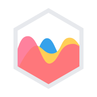
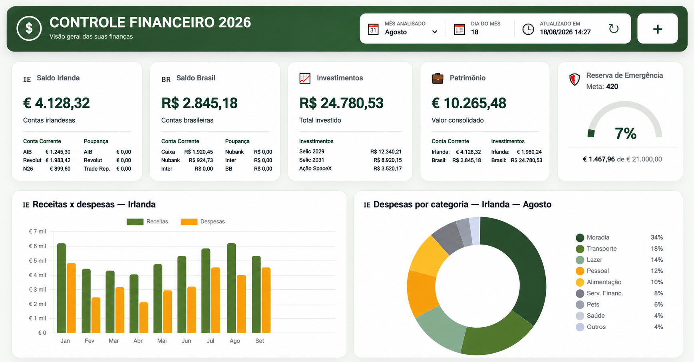
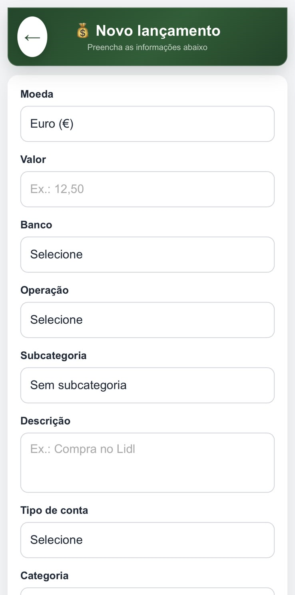

Dashboard completo
Visão geral de saldos, receitas, despesas, investimentos e patrimônio.
Dashboard e interface de lançamentos para centralizar informações financeiras, acompanhar saldos, investimentos e indicadores em uma visão clara e organizada.

Chart.js

Informações distribuídas entre contas, moedas e registros manuais dificultam uma visão clara das finanças. O desafio do projeto foi reunir esses dados e organizar o acompanhamento de gastos, investimentos e patrimônio.
Desenvolvi um dashboard integrado ao Google Sheets por meio do Apps Script, com uma interface web para organizar lançamentos e visualizar informações financeiras em um só lugar.
Visão geral de saldos, receitas, despesas, investimentos e patrimônio.
Interface para registrar movimentações financeiras de forma organizada.
Organização dos lançamentos por categorias e subcategorias.
Acompanhamento dos investimentos e dos valores consolidados.
Gráficos e métricas para apoiar a análise financeira.
Organização e armazenamento dos dados.
Integração entre planilha e interface, com automações.
Estrutura das interfaces.
Estilização e responsividade.
Interações e lógica da aplicação.
Gráficos e visualização de dados.
Screenshots com dados fictícios. Selecione uma imagem para vê-la em tamanho original.
Seção atual 01 / 05
Me conte um pouco do que você precisa. Será um prazer entender seu projeto.